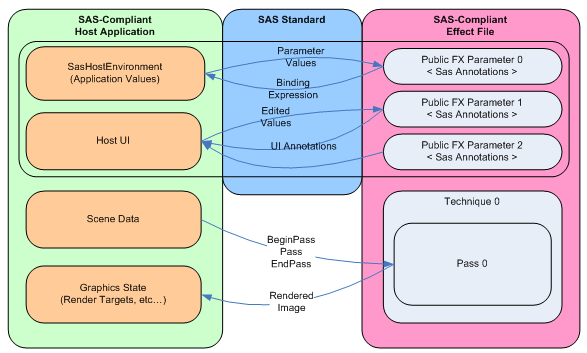

Standard annotations and semantics (DXSAS) provide a method of using shaders in a standard way that enables shaders to be used with tools, applications, and game engines. DXSAS defines a set of semantics and annotations that are attached to host application values and effect parameters for the purpose of sharing effects. In order for these annotations and semantics to be useful, they must be implemented in both the host application and the effect file. This document describes the DXSAS standard which leverages the power of the DirectX Effect Framework to enable host applications and tools to share DirectX effects (.fx files) programmatically, as well as to design interaction with UI.
Standard annotations and semantics are designed to bind effect and X-file parameters to host application values. The D3DX Effect Framework (or effects) encapsulates rendering state. By encapsulating rendering state (including vertex, texture, and pixel processing state) in an effect, you can create a library of effects covering a wide range of rendering options. This might include options such as rendering on different types of hardware, or rendering with single or multi-pass blending. For more information on the effect framework, you should refer to Effect Reference. DXSAS builds on top of this framework allowing for a more consistent experience for developers. Once the rendering setup is encapsulated in an effect, the DXSAS standard allows the effect developer to expose the intent of the effect parameters through annotations. These annotations can then be read by any host application or tool (not just the one that was designed to use the effect) that is compliant with the standard will understand how to use the effect in the manner that was designed.
Standardizing the set of effect semantics and annotations that host applications support allow effect authors to create effects that can be used in multiple projects and thus promote a wider community of effect users. The DXSAS standard makes files readable by developers, exchangeable between tools, and enables developers to leverage 3rd party tools for authoring effects for their pipeline.
This document describes the DXSAS standard which uses annotations to express the intent of effect parameters, as well as defining a collection of host application values that host applications agree to make available to an effect.
As you can see from the following diagram, the DXSAS standard requires annotations in an effect file, as well as a host application that follows the guidelines described here to work with the file.

The host application must implement the user interface logic and the host environment. To implement DXSAS-compliant effects, read the following topics:
All identifiers, semantics, and annotation values are case insensitive. Annotation names (not values) are case sensitive. Annotation names are recognized by the D3DX effects system and therefore SAS annotation names are as well.
Â
Â